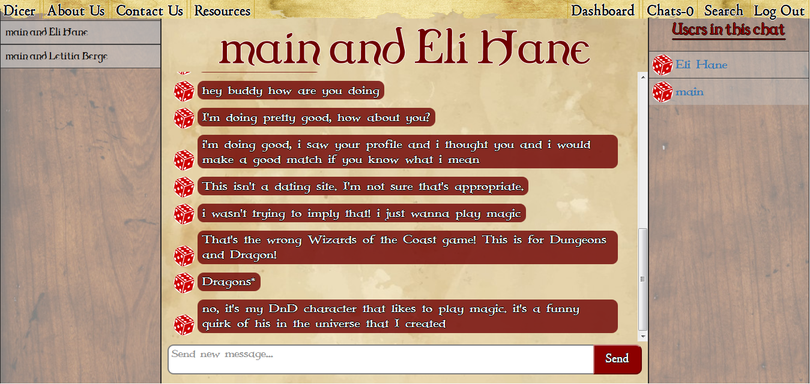
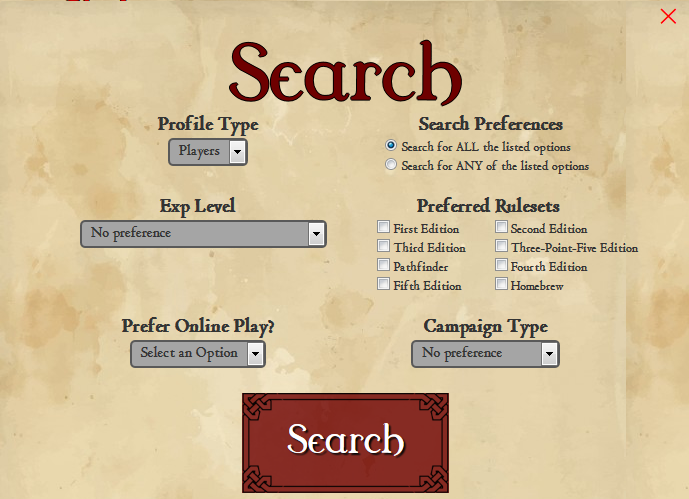
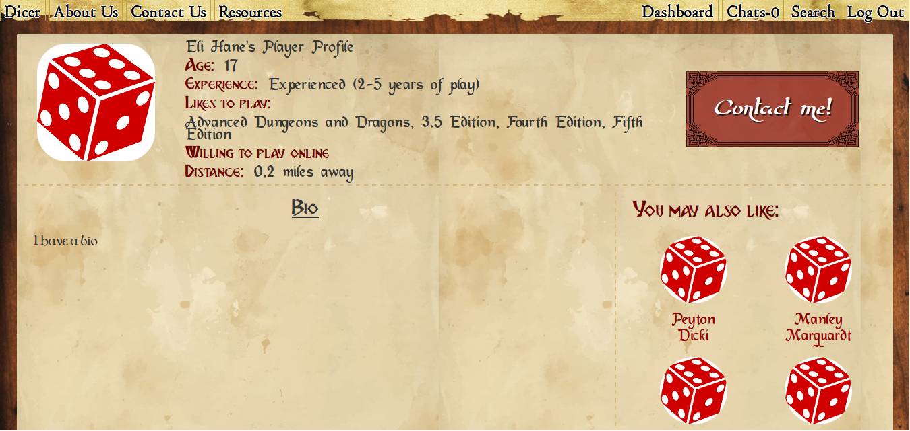
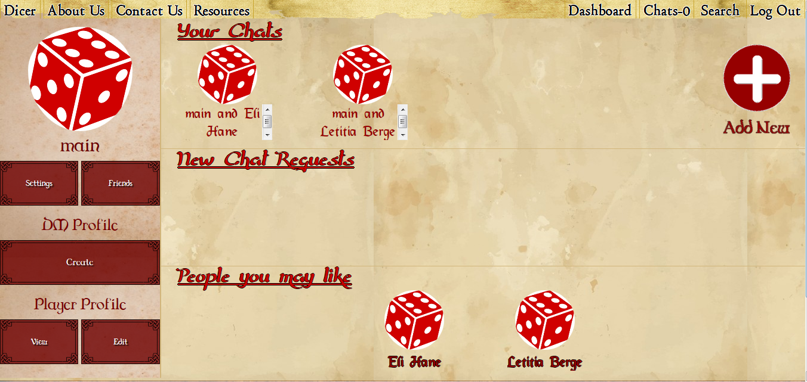
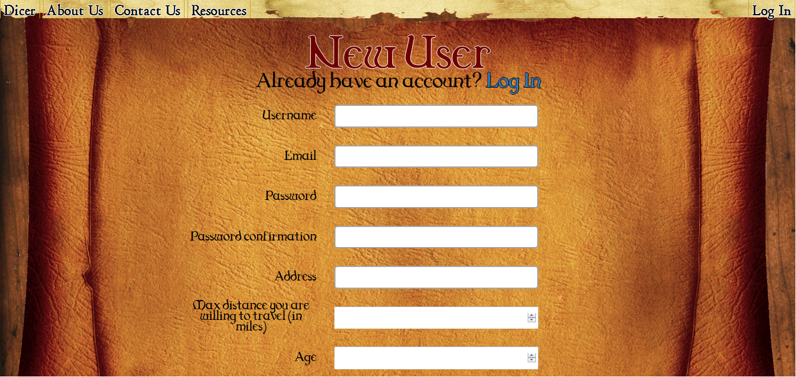

What does Dicer look like?
- 
- An example of basic message flow between two users.
- 
- The search form that a user can access from any page in the app to find other users.
- 
- Viewing a user's Player Profile.
- 
- A user's dashboard shows profile recommendations for possible friends, and keeps tracks of chats you're a part of.
- 
- Signing up is easy. What are you waiting for?